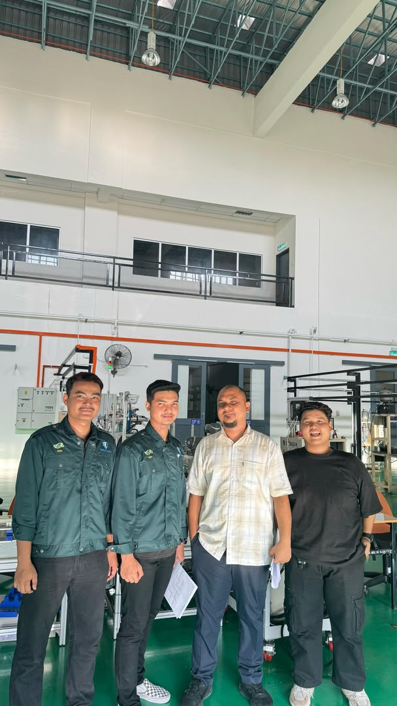

Monitoring
Monitoring
Water Quality Monitoring
Problem: Integrating hardware and software for monitoring.
My role: Team leader and integrator.
Tools: Arduino Uno, GitHub, Google Sheets.
Outcome: Hardware and software communicated successfully with positive response.

HMI-SCADA
Teaching Factory: Integrated Conveyor and Robot System
Problem: Integrating a conveyor and a robot through one HMI, so the operator can monitor and control the line from a single screen.
My role: HMI Developer
Tools: Mitsubishi GT Designer3
Outcome: The conveyor and robot systems worked together through the HMI, with positive results.
 PCB Design
PCB Design
ESP32 Monitoring Board PCB Design
Problem: Combining an ESP32, an I2C display and a sensor module on one custom board instead of loose wiring.
My role: PCB Designer
Tools: EasyEDA
Outcome: layout completed